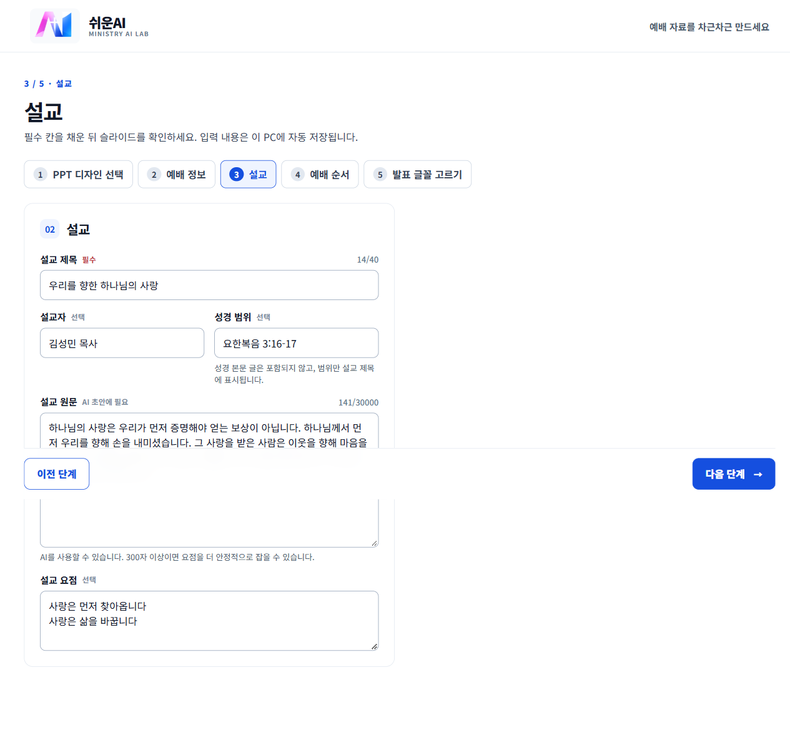

사용할 AI 고르기
Antigravity, Claude, Hermes, Codex 중 본인이 사용하는 도구를 선택합니다. 설치되지 않았다면 앱에서 해당 도구의 공식 설치를 시작합니다.
예배 준비를 위한 데스크톱 앱 · v0.9.0
디자인을 고르고 설교 원문과 예배 순서를 입력하세요. 쓰는 AI를 선택해 요점을 만들고, 슬라이드를 대화로 고친 뒤 PPTX 또는 HTML로 받습니다.
HOW IT WORKS
필요한 내용을 순서대로 입력하고 결과를 눈으로 확인합니다.
Antigravity, Claude, Hermes, Codex 중 본인이 사용하는 도구를 선택합니다. 설치되지 않았다면 앱에서 해당 도구의 공식 설치를 시작합니다.
내장된 디자인 사양서 3개를 실제 16:9 슬라이드 모양으로 보고 선택합니다.
설교 요점 대신 원문을 붙여넣고, 교회의 실제 예배 순서를 진행 순서대로 적습니다.
AI가 뽑은 요점의 근거를 확인하고, 슬라이드 한 장씩 채팅으로 고친 후 PPTX 또는 HTML로 저장합니다.
REAL APP SCREENS
아래 이미지는 Windows에서 실행한 쉬운AI 앱을 직접 캡처한 화면입니다. Mac과 Linux는 같은 앱 화면을 사용합니다.

USEFUL, WITH CLEAR LIMITS
DOWNLOAD · v0.9.0
버튼은 실제 배포 파일이 준비된 운영체제에서만 활성화됩니다. 설치 후 사용할 AI 계정에 로그인하세요.
Windows 10/11 · x64
준비 중설치 프로그램 · .exe · 파일을 열어 설치M1 이상 · arm64
준비 중디스크 이미지 · .dmg · 앱 폴더로 이동Intel 프로세서 · x64
준비 중디스크 이미지 · .dmg · 앱 폴더로 이동64비트 · x64
준비 중.deb 준비 중Ubuntu/Debian은 .deb · 다른 배포판은 AppImageWindows 화면에서 확인한 기능을 기반으로 배포합니다. 다른 운영체제에서는 글꼴과 AI CLI 로그인 방식이 다를 수 있습니다. AppImage는 실행 권한을 허용해야 열립니다. 문제가 있으면 배포 기록과 SHA-256 확인값을 참고하세요.
배포 기록과 파일 확인값 보기 ↗